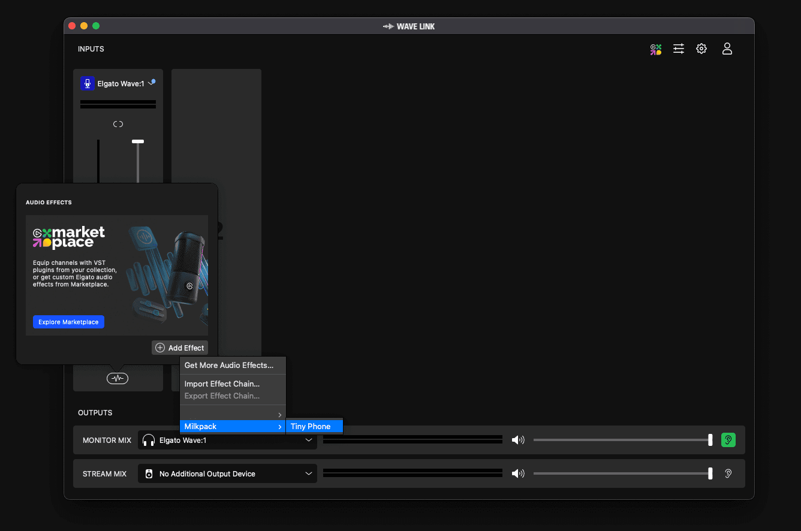
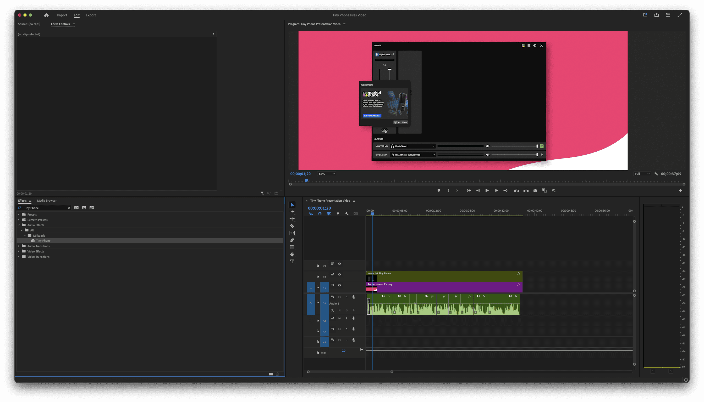
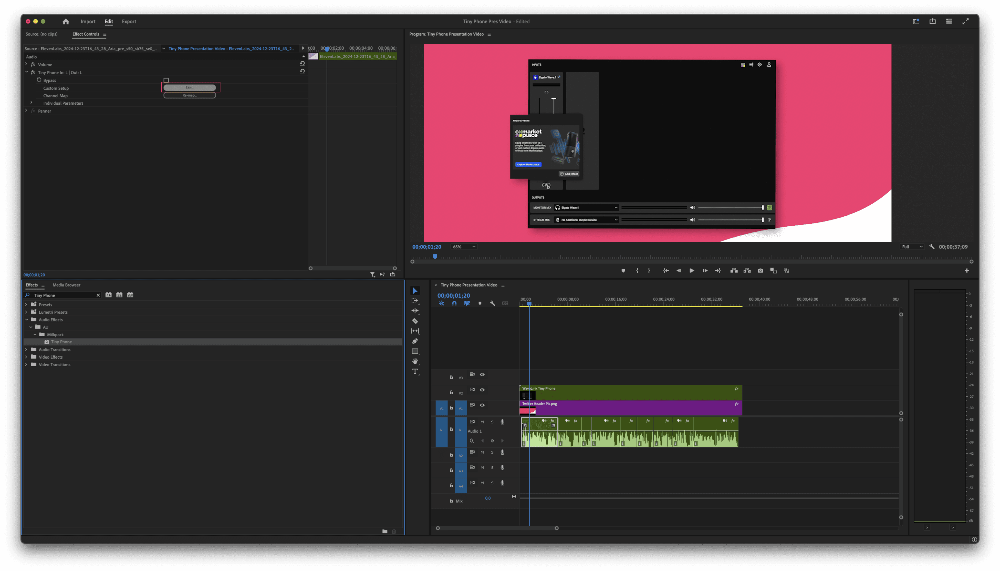

After downloading Tiny Phone from the Elgato Marketplace, you should be ready to use it straightaway in Wave Link or any other application that supports VST plugins, such as Premiere Pro, Ableton, FL Studio, and more.
In this guide, we’ll go over how to apply this plugin to your audio in Wave Link and audio clips in Premiere Pro!
*This plugin is experimental and will most likely include some bugs. If you find some and fancy reporting them to me, email as much info about the bug as possible to support@milkpack.tv
Wave Link
Adding the plugin in Wave Link is extremely easy and straightforward.
1. Open Wave Link and add the Effect
2. You can find it under Milkpack -> Tiny Phone

{kind=link}

Premiere Pro
Select the audio layer you want to apply the effect to.
Open the Effects panel and search for ‘Tiny Phone.’
Once you find it, drag it onto your audio layer.
If you want to make adjustments to the effect, open the Effects Control panel and select Edit.
{kind=link}

{kind=link}

That’s it! Thanks for downloading, and enjoy your new plugin :)